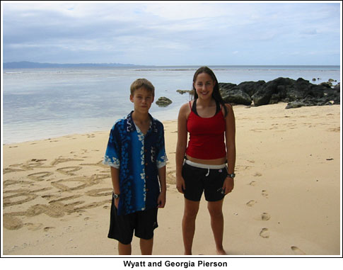

|


|

|
The following was written by Georgia, our 15-year-old daughter, back in
January for a school application. We asked, and she said I was welcome to
post it as long as I forwarded any of the comments to her. Thought
you all might enjoy her take. -- Janet
-------------------------------------------------------- For the past five months my family and I have been living in Fiji, a group of tropical islands in the South Pacific, universally known as the source of Fiji water. My parents and brother dove head first into the local island experience by living on Taveuni, the Garden Island, and I was left in Suva, the capital on the main island, Viti Levu. While they were showing free movies at the cramped 180 Meridian Cinema, (getting its name from its location on the International Dateline), I was at the Village Six, where the seats are almost too far apart to put your feet up on the one in front of you. While they were jumping off cliffs and dropping from tree branches into the nearby swimming cove, I was becoming acquainted to Fiji's nightlife of karaoke clubs and pool halls, or eating at the exciting new addition to Fiji's fast food options, KFC, "Fiji's favorite chicken". My brother attended the local Catholic School, Holy Cross, and I enrolled at the International School Suva. Despite the weekend trips to Taveuni, my life had taken an ironic twist. I ended up in more of a city situation, instead of an untouched tropical paradise. Although unexpected, my experience served as a stepping stone minimizing the culture shock of moving from American to Island life. Most of the International School population was Steve Irwin-hating Australians and sheep-loving New Zealanders, which left only one third of the students as ethnic Fijians. With help from the Fijian administrators, many students had adopted the way of the land, and the Fijian mentality was upheld as the foundation of the school community. The approach to academic discipline was lackadaisical, the only area taken seriously was the dress code, to maintain the reputation of the school. The indolent attitude even found its way to the basketball court. My second week was the start of the "basketball season". I was beyond excited, expecting to work long and hard, coming from the Varsity team of my last school and I had seen how seriously the rugby and netball seasons were taken. Even after the first basketball practice had been pushed back enough times to lose a week I wasn't worried. "What's a week, the winter seasons always the longest." When the practice was finally held, only two girls decided to show up, one in her school uniform, which consisted of a knee length skirt, a sleeveless button down top, and no shoes. The other one was me, dressed for basketball head to toe. Two weeks later, and four practices better, with girls recruited from netball, our team was almost ready for "the tournament", but not without the coach giving his arousing, inspirational speech, making sure to cover the most important factor of the game: you MUST wear shoes. I had heard this before, but then it had meant basketball shoes must be worn to every practice, and only on a basketball court. In this case, it meant to wear any covered, sneaker type shoe, that won't fall off while running, and it was described as a "safety precaution of the gym". Although this speech had not corrected the over the head, soccer throw-in style shot, or taught any of the girls to play a basic defense, with these last words imprinted in our minds we managed to win our first game. Unfortunately, it was only because the team we were supposed to play didn't exist, but with that as our only victory we still somehow miraculously made it to the semi-finals. After our last devastating loss, the season was over as quickly as it had started. Once my two terms at the international school were over, I decided to move in with my family on Taveuni, an island not only with no basketball but no electricity. Our house is a 120-year-old plantation house, with solar power that works some of the time. Three miles, or five kilometers down the road, is the town of Wairiki, home to the "worlds most remote movie theater", so far. When my family is not out exploring the rest of the island, the majority of our time is spent here. My father "John Free Movies", brother and I pick up all the "rubbish" on the floor, which the locals are considerate enough to put there instead of out the window because of my father's speech listing the rules before every movie: 1. Don't break the bathrooms when they are occasionally working and 2. Don't throw your rubbish out the windows. One day while walking with my brother Wyatt, we came across a volleyball game at the edge of the village where the majority of his friends live. A few kids yelled out "Wyatt", and the rest "Uro". "Uro" was not a nickname I had brought with me from America, nor does it sounds short for "Georgia", but for some reason since my arrival in Fiji I had been answering to this name. It didn't take long before I was informed of the real meaning, apparently it meant either "I love you" or "sexy". In my mind the first thought was that the two shouldn't be categorized as the same word, but at this point in the trip my experience has been that, for Fijians, there's no distinction between, "I love you" and "I want you". Traditionally, in their culture relationships among Fijians are taken more seriously, but as for the villagers in my area, they have no problem calling Wyatt "tuvale" which means "brother in law". At first we were reluctant to join the game, but soon after broke out our American skills with no hesitation. Even though our team was never victorious joining was not a complete loss. Once the volleyball obtained a hole too big to be salvaged by tape, I was asked to travel to another island with them all to play in a tournament the following day. I could bring Wyatt and all we had to do was show up at the same spot at 8 am. As the next morning turned into afternoon, we waited for our boat. Fiji is made up of over 300 islands, so by people saying we were going to "the island" I had no idea which one it was. Thinking "tournament", I assumed it was one large enough to have several teams., but became skeptical when teammates claimed the games started "when we got there". Turns out we were going to Kioa Village, the sole village on Kioa Island. The games finally began around 4pm and continued until about 6, exactly when the sun had set enough to stop glaring in our eyes. Then the Taveuni team was crowned the winners and the Kioa team the losers, coming in at a close second. All the people from Taveuni split up to spend the night with different families. Wyatt and I stayed with Dee, an old friend of the Taveuni, players, and as we found out later, a chief's daughter. We headed back to her one-room house with a curtain separating the rooms and a porch as the kitchen. Then it was time for showers. When I hear the word shower I automatically think steamy, overhead running water, everything typically found in a hotel room. On the contrary, an island shower consists of a large bucket, a smaller bucket, and if you're lucky, a shed. The larger bucket is filled by one of the running water taps located around the village and brought back to either the bathing shed or any area outside where water can be dumped. If you are in the open, a sulu is usually worn, then simply the smaller container is used to pour the water over your head. There is no hot water, so I was always hesitant to pour the first bucket, but once the initial shock passes every other bucket becomes more refreshing. Afterwards you can dress yourself or just walk around in the towel as long as you like, no one seems to even notice. Peculiar how you can walk around in a towel all day, but you receive countless dirty looks when you wear shorts that fall above the knee. After showers everyone sat on the floor for dinner of island style two-minute noodles with no utensils, then wandered around, eventually making their way to the dance hall. A traditional dance has lights on, ladies sitting on one side, and men drinking kava on the other. The ladies wait for one of the men to come pick them to dance, then the two go into the middle and "get their groove on", but hardly ever touch each other. The dance ends before eleven, when the communal generator is shut off. Then the ladies join the men and move the kava bowl outside to the bure, or traditional grass hut, to continue the celebration. There's talking and laughing until everyone decides it's time to call it a night, usually when the kava finishes. Then everyone makes their way back home across the wood one-plank bridges and drifts off to sleep, thinking about the next morning when the kava session will most likely start all over again. We were supposed to return to Taveuni early the next morning, but after hours of aimless time consumption, we heard we were going to stay another day. That's how information travels on these islands, "coconut wireless" the locals call it. News always gets around, sometimes fast, sometimes slow, but eventually everyone knows. Staying longer was not a big deal for any of the natives, but of course my brother and I knew our over protective, American parents would imagine endless stories of our torturous death because of our failure to return. Luckily, Gopal, the husband of our family friend and chef, unexpectedly showed up on the island so we sent him back with news of our prolonged stay. What started out as a family joke has now become an unbelievable reality. Leaving my sheltered New York suburban home for the unspoiled Garden Island has been amazing. Instead of television, I have culture. Instead of boring, I have adventure. Instead of ordinary, I have paradise. It's a place seemingly stuck in the past, yet where every new day on earth begins. -- Georgia Pierson

Photos from Fiji


 |
{% include footer.html %}
{% include copyright.html %}
{% include barmap.html %} {% include topmap.html %}